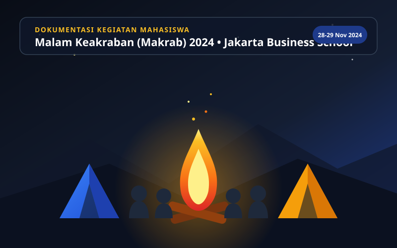
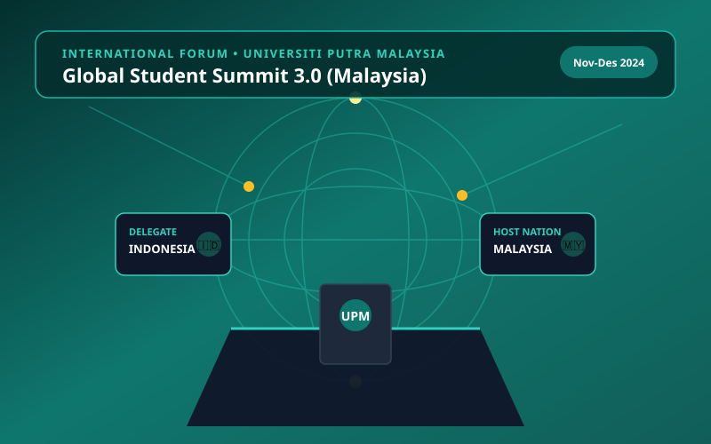

Halo, Saya Dina Kumala Ningrum
Mahasiswi Bisnis Digital yang berdedikasi tinggi dengan pengalaman praktis dalam koordinasi acara, strategi konten digital, dan pemberdayaan komunitas generasi muda. Terampil memimpin inisiatif kampus serta membangun kolaborasi eksternal strategis untuk mendorong dampak sosial positif dan pengembangan potensi mahasiswa.
Dina Kumala Ningrum
Mahasiswa S1 Bisnis Digital
Kepemimpinan Transformatif & Passion Bisnis Digital
Profil Singkat
Sebagai mahasiswa Program Sarjana (S1) Bisnis Digital di Jakarta Business School yang tengah menempuh pendidikan sejak September 2023, saya mengintegrasikan wawasan analitis bisnis dengan keterampilan kepemimpinan strategis.
Dalam amanah sebagai President of Student Union, fokus utama saya adalah membangun ekosistem kampus yang inklusif, progresif, dan sinergis. Saya memiliki keahlian teruji dalam mengoordinasikan berbagai divisi kerja, merancang agenda berbasis dampak nyata, mengelola kemitraan lintas organisasi, serta menjembatani aspirasi mahasiswa dengan pemangku kebijakan kampus.
Kombinasi latar belakang digital marketing, manajemen acara berskala besar, komunikasi publik, serta keterlibatan forum internasional seperti Global Student Summit di Malaysia membentuk karakter kepemimpinan adaptif dan berorientasi solusi di era transformasi digital.
Inovasi Digital
Memanfaatkan teknologi dan strategi konten kreatif dalam pemberdayaan civitas akademika.
Kepemimpinan Empatik
Mengedepankan komunikasi terbuka, transparansi kepengurusan, dan aspirasi inklusif.
Dampak Nyata
Setiap agenda dan program kerja dirancang memiliki parameter keberhasilan yang terukur.
Informasi Pribadi & Kontak
- Nama Lengkap Dina Kumala Ningrum
- Status & Posisi Mahasiswa S1 Bisnis Digital & President of Student Union
- Institusi Jakarta Business School
- Email dinkmlaningrum@gmail.com
- No. Telepon / WA +62-858-1930-3998
- Instagram @dinkmla
- Bahasa Indonesia (Native), English (Intermediate)
Pengalaman Organisasi & Manajerial
Perjalanan memimpin organisasi mahasiswa, menggerakkan tim lintas divisi, dan menciptakan program kerja berorientasi pemberdayaan di Jakarta Business School.
President (Ketua BEM)
Jakarta Business School Student Union
Memimpin seluruh badan eksekutif mahasiswa di Jakarta Business School dalam menyusun arah gerak strategis, mewadahi aspirasi mahasiswa, serta memperkuat sinergi antara mahasiswa, akademisi, dan stakeholder eksternal.
Tanggung Jawab & Inisiatif Kunci:
- Arah Strategis & Kepemimpinan Eksekutif: Menahkodai kepengurusan Student Union dengan prinsip transparansi, akuntabilitas, dan kolaboratif.
- Pemberdayaan Komunitas Mahasiswa: Menginisiasi program-program pengembangan karir, kewirausahaan digital, dan kesehatan mental mahasiswa.
- Advokasi & Diplomasi Kampus: Berfungsi sebagai jembatan komunikasi formal antara aspirasi seluruh angkatan mahasiswa dengan pimpinan rektorat/fakultas.
- Kemitraan Strategis Eksternal: Membuka ruang kolaborasi dengan organisasi kepemudaan, komunitas bisnis, dan asosiasi mahasiswa antar-kampus.
Staff – Social and Community Division
Jakarta Business School Student Council
Bertanggung jawab dalam merancang serta mengeksekusi program-program kepedulian sosial, keakraban mahasiswa, dan kolaborasi pengabdian masyarakat guna menumbuhkan solidaritas tinggi di lingkungan kampus.
Kontribusi Utama:
- Menggalang kegiatan pengabdian masyarakat dan program kepedulian lingkungan yang melibatkan mahasiswa aktif JBS.
- Memfasilitasi integrasi sosial bagi mahasiswa baru melalui inisiatif interaktif dan komunikasi multikanal.
- Bekerja sama erat dengan divisi internal untuk memastikan setiap program terlaksana sesuai tenggat waktu dan target partisipasi.
Proyek Unggulan & Pengalaman Acara
Bukti nyata kepemimpinan lapangan dalam memanajemeni acara skala kampus dan produksi acara kreatif kolaboratif.
Student Welcoming Gathering – “Malam Keakraban” (Makrab)
Jakarta Business School Student Council
Memimpin seluruh komite kepanitiaan dalam menyelenggarakan kegiatan penyambutan dan keakraban mahasiswa baru Jakarta Business School.
- Menahkodai koordinasi terpadu antar divisi: Acara, Logistik, Konsumsi, Medis, dan Keamanan.
- Mengelola manajemen risiko, alur anggaran operasional, serta kelancaran rundown selama 2 hari 1 malam.
- Mencapai tingkat kepuasan peserta yang luar biasa dan membangun ikatan solid lintas angkatan.
Mini Concert & Perayaan 17 Agustus
Pigijo Representative & Youth Culture
Bertindak sebagai penulis naskah (scriptwriter) dan koordinator konser akustik mini dalam rangka peringatan HUT Republik Indonesia, mengangkat tema seni dan pelestarian budaya lokal.
- Menginisiasi kolaborasi resmi dengan komunitas musik lokal ternama: Taman Suropati Chamber.
- Menyusun konsep narasi naskah pertunjukan, mengawasi alur panggung, dan interaksi audiens.
- Mendorong keterlibatan pemuda dalam mengapresiasi musik seni akustik serta pelestarian budaya bangsa.
Global Student Summit 3.0
Universiti Putra Malaysia (UPM)
Terpilih sebagai delegasi dalam forum konferensi mahasiswa internasional di Malaysia, mendiskusikan kepemimpinan pemuda, inovasi bisnis, dan kolaborasi kawasan regional ASEAN.
- Mewakili suara mahasiswa dalam diskusi panel kepemimpinan dan pembangunan berkelanjutan.
- Membangun jejaring koneksi akademik dengan mahasiswa dari berbagai universitas di Asia Tenggara.
- Memperluas perspektif global terkait dinamika bisnis digital regional.
Thriving in the Digital Age : Mental Health & Career Growth
My Digital Academy by Mandiri
Mengikuti program intensif pengembangan kapabilitas kepemimpinan digital yang diselenggarakan oleh Bank Mandiri, menyeimbangkan akselerasi karir dengan ketahanan psikologis mental.
- Memperdalam strategi resiliensi dan work-life integration bagi profesional muda di era serba cepat.
- Mempelajari metodologi perencanaan karir berbasis kompetensi industri perbankan & teknologi terkini.
Galeri Kegiatan & Rekam Jejak
Kumpulan momen penting kepemimpinan, kepanitiaan acara berskala kampus, delegasi internasional, dan inisiatif pengabdian mahasiswa.

Event Kampus 28–29 Nov 2024Malam Keakraban (Makrab) Mahasiswa 2024
Memimpin koordinasi terpadu 5 divisi kepanitiaan dalam penyelenggaraan malam keakraban mahasiswa baru Jakarta Business School.
 Seni & Budaya
Agustus 2024
Seni & Budaya
Agustus 2024
Mini Concert & HUT Kemerdekaan RI Ke-79
Kolaborasi artistik pertunjukan konser akustik bersama musisi lokal Taman Suropati Chamber untuk merayakan kemerdekaan bangsa.

Internasional Nov–Des 2024Global Student Summit 3.0 - Universiti Putra Malaysia
Mewakili Indonesia dalam dialog kepemimpinan mahasiswa Asia Tenggara mengenai inovasi bisnis digital dan keberlanjutan.
 Digital Academy
Februari 2025
Digital Academy
Februari 2025
Thriving in the Digital Age: Mental Health & Growth
Pelatihan kapabilitas kepemimpinan digital intensif oleh Bank Mandiri untuk penguatan resiliensi karir dan kesiapan profesional.
 Amanah Eksekutif
Mei 2025
Amanah Eksekutif
Mei 2025
Pelantikan & Rapat Kerja BEM Jakarta Business School
Peresmian amanah ketua badan eksekutif mahasiswa dan perumusan blueprint program kerja strategis sinergi kampus.
 Sosial Kampus
2024–2025
Sosial Kampus
2024–2025
Inisiatif Sosial & Pengabdian Komunitas Mahasiswa
Menggerakkan partisipasi mahasiswa dalam aksi kepedulian lingkungan dan keakraban sosial civitas akademika JBS.
Pendidikan & Sertifikasi Profesional
Bachelor's Degree in Business (S1 Bisnis Digital)
Jakarta Business School
Mempelajari ekosistem bisnis modern, transformasi digital perusahaan, pemasaran berbasis data, manajemen finansial, serta strategi pertumbuhan startup dan korporasi.
Kursus & Pengembangan Kompetensi
Thriving in the Digital Age : Mental Health and Career Growth
Global Student Summit 3.0
Digital Marketing Course
English Language Enhancement Course (ELEC)
Keahlian & Kemahiran Profesional
Kombinasi keahlian kepemimpinan manajerial, strategi konten digital, kemampuan komunikasi, dan penguasaan perangkat kerja.
Kepemimpinan & Manajemen Acara
Core CompetenciesStrategi Konten & Bisnis Digital
Digital & MarketingSoftware, Tools & Bahasa
Productivity & CommunicationHubungi Dina Kumala
Terbuka untuk audiensi kemahasiswaan, kemitraan sponsorship, pembicara seminar/talkshow, dan kolaborasi strategis bisnis digital.
Kirim Pesan Langsung
Silakan isi formulir di bawah ini untuk memulai obrolan, mengundang sebagai pembicara, atau menawarkan inisiatif kerja sama.